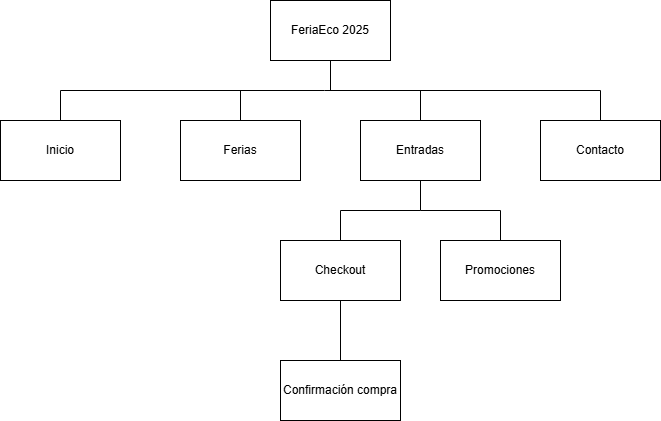

Texto Introductorio
Este trabajo se basa en el caso “Feria Sustentable Itinerante”, una iniciativa que promueve prácticas ecológicas en distintas ciudades. La propuesta del grupo es desarrollar un sitio web accesible, informativo y visualmente atractivo que facilite la difusión del evento y mejore la experiencia del usuario.
Actividad principal
La actividad principal de la organización es promover la sustentabilidad mediante una feria itinerante que recorre distintas ciudades de una provincia argentina, acercando productos ecológicos, talleres y propuestas educativas a la comunidad.
Objetivos del sitio web
El objetivo del sitio web es brindar toda la información necesaria sobre el evento (fechas, ubicaciones, horarios, actividades y stands), facilitar el acceso a promociones y compras online, y ofrecer una experiencia accesible, clara y atractiva para todo tipo de usuarios.
Concepto general
El concepto general del sitio se basa en un diseño visual natural y simple, con navegación intuitiva y elementos interactivos como mapas, formularios y galerías. Las estrategias de atracción incluyen contenido visual atractivo, actividades destacadas, promociones para familias y grupos, y acceso rápido desde dispositivos móviles.
Análisis del público objetivo
- Familias con hijos pequeños o adolescentes, interesadas en propuestas recreativas y educativas.
- Jóvenes que valoran la innovación, el consumo responsable y las experiencias comunitarias.
- Personas de todas las edades que buscan adoptar hábitos más sustentables.
Este público se caracteriza por un alto uso de medios digitales, sensibilidad ambiental y búsqueda de actividades significativas vinculadas al cuidado del planeta.
Identidad Visual Inicial
| Color | Código Hexadecimal | Uso principal | Descripción |
|---|---|---|---|
| Blanco suave | #FBFDFC | Fondo principal (`body`, `.promociones`) | Es un blanco cálido, que aporta claridad sin ser frío, ideal para transmitir limpieza y sustentabilidad. |
| Verde oscuro | #1B281B | Texto general, títulos, `.dia.activo` | Verde muy oscuro casi negro, asociado a la naturaleza, elegancia y legibilidad. |
| Verde claro grisáceo | #DDEDE1 | Fondo de encabezado | Muy suave, fresco y moderno, aporta armonía ecológica y claridad visual. |
| Verde oliva apagado | #F4F8F1 | Fondo de sección `.mision` | Un verde apagado muy claro, transmite calma, limpieza y coherencia con el estilo natural. |
| Gris verdoso | #F0F0E4 | Inputs, campos de formulario | Un tono crema tirando al gris, usado para diferenciar elementos sin generar contraste agresivo. |
| Gris medio | #888888 | Texto de `.dia` no activo | Neutral, para resaltar el contraste del día activo. Da sensación de jerarquía visual. |
| Gris claro | #CCC | Líneas divisorias de preguntas frecuentes | Útil para separar contenido sin distraer visualmente. |
| Verde hoja | #39833C | Botones (enviar), enlaces (`.info a`) | Aporta vitalidad y energía, asociado directamente a lo ecológico. Llamativo sin ser agresivo. |
| Verde más intenso | #2a902b | Hover de botón | Refuerza interacción activa, mantiene coherencia de tonalidad. |
| Gris oscuro verdoso | #4A5245 | Texto de contacto | Legible, con tono sobrio. Complementa sin competir con el contenido. |
| Verde de trazo | #204F0A | Bordes del ícono circular (check) | Verde más saturado para destacar iconografía asociada a beneficios. |
| Verde muy suave translúcido | rgba(218, 218, 202, 0.4) | Fondo de box `.promo`, `.pago` | Aporta volumen visual suave, mantiene estética clara y aireada. |
| Verde-marrón translúcido | rgba(22, 52, 9, 0.16) | Bordes de los box `.promo`, `.pago` | Ligero contraste para definir límites sin romper el estilo limpio. |
| Gris topo claro | #b6b6a8 | Divider `.divisor` | Neutro, elegante, separa secciones de forma sutil. |
| Verde casi negro alternativo | #1D221B | Textos promocionales y pagos | Otro tono muy oscuro y natural, coherente con los títulos principales. |
Mapa del sitio
Prototipo
Enlace a Figma o Penpot: Figma
Organización del equipo
- Camila de la Torre - UX/UI Designer
- Facundo Sole - Programador
- Tomas Emanuel Perez - Maquetador HTML/CSS
- Tomas Kupinski - Comunicador Web